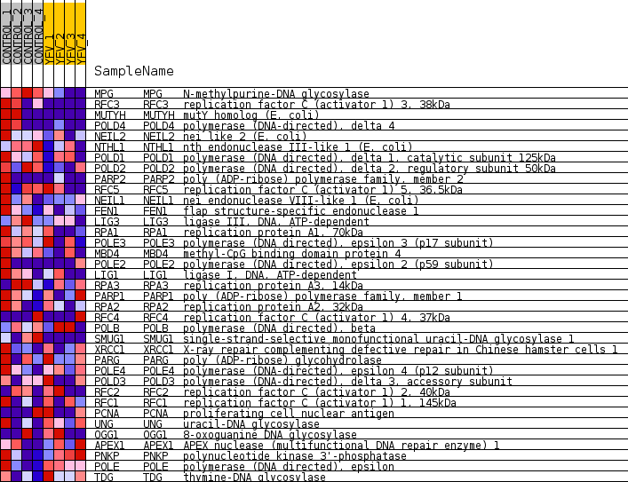
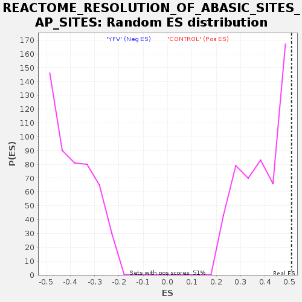

Profile of the Running ES Score & Positions of GeneSet Members on the Rank Ordered List
| Dataset | MATRIZ_GSE99081_collapsed_to_symbols.gsea_CLASE_99081.cls#CONTROL_versus_YFV |
| Phenotype | gsea_CLASE_99081.cls#CONTROL_versus_YFV |
| Upregulated in class | CONTROL |
| GeneSet | REACTOME_RESOLUTION_OF_ABASIC_SITES_AP_SITES |
| Enrichment Score (ES) | 0.5099116 |
| Normalized Enrichment Score (NES) | 1.2979609 |
| Nominal p-value | 0.0 |
| FDR q-value | 0.9850287 |
| FWER p-Value | 1.0 |
| SYMBOL | TITLE | RANK IN GENE LIST | RANK METRIC SCORE | RUNNING ES | CORE ENRICHMENT | |
|---|---|---|---|---|---|---|
| 1 | MPG | N-methylpurine-DNA glycosylase | 89 | 1.316 | 0.1155 | Yes |
| 2 | RFC3 | replication factor C (activator 1) 3, 38kDa | 159 | 1.141 | 0.2162 | Yes |
| 3 | MUTYH | mutY homolog (E. coli) | 432 | 0.862 | 0.2786 | Yes |
| 4 | POLD4 | polymerase (DNA-directed), delta 4 | 792 | 0.705 | 0.3213 | Yes |
| 5 | NEIL2 | nei like 2 (E. coli) | 1656 | 0.502 | 0.3142 | Yes |
| 6 | NTHL1 | nth endonuclease III-like 1 (E. coli) | 2337 | 0.435 | 0.3122 | Yes |
| 7 | POLD1 | polymerase (DNA directed), delta 1, catalytic subunit 125kDa | 2371 | 0.430 | 0.3497 | Yes |
| 8 | POLD2 | polymerase (DNA directed), delta 2, regulatory subunit 50kDa | 2446 | 0.420 | 0.3838 | Yes |
| 9 | PARP2 | poly (ADP-ribose) polymerase family, member 2 | 2733 | 0.378 | 0.4009 | Yes |
| 10 | RFC5 | replication factor C (activator 1) 5, 36.5kDa | 2905 | 0.352 | 0.4227 | Yes |
| 11 | NEIL1 | nei endonuclease VIII-like 1 (E. coli) | 2984 | 0.345 | 0.4496 | Yes |
| 12 | FEN1 | flap structure-specific endonuclease 1 | 3266 | 0.313 | 0.4611 | Yes |
| 13 | LIG3 | ligase III, DNA, ATP-dependent | 3370 | 0.302 | 0.4824 | Yes |
| 14 | RPA1 | replication protein A1, 70kDa | 3464 | 0.292 | 0.5036 | Yes |
| 15 | POLE3 | polymerase (DNA directed), epsilon 3 (p17 subunit) | 3752 | 0.262 | 0.5099 | Yes |
| 16 | MBD4 | methyl-CpG binding domain protein 4 | 4181 | 0.228 | 0.5045 | No |
| 17 | POLE2 | polymerase (DNA directed), epsilon 2 (p59 subunit) | 4611 | 0.190 | 0.4955 | No |
| 18 | LIG1 | ligase I, DNA, ATP-dependent | 5274 | 0.132 | 0.4668 | No |
| 19 | RPA3 | replication protein A3, 14kDa | 5730 | 0.095 | 0.4475 | No |
| 20 | PARP1 | poly (ADP-ribose) polymerase family, member 1 | 6262 | 0.056 | 0.4198 | No |
| 21 | RPA2 | replication protein A2, 32kDa | 6313 | 0.052 | 0.4215 | No |
| 22 | RFC4 | replication factor C (activator 1) 4, 37kDa | 6627 | 0.031 | 0.4050 | No |
| 23 | POLB | polymerase (DNA directed), beta | 7121 | 0.004 | 0.3750 | No |
| 24 | SMUG1 | single-strand-selective monofunctional uracil-DNA glycosylase 1 | 7203 | 0.000 | 0.3700 | No |
| 25 | XRCC1 | X-ray repair complementing defective repair in Chinese hamster cells 1 | 9564 | -0.006 | 0.2249 | No |
| 26 | PARG | poly (ADP-ribose) glycohydrolase | 9995 | -0.025 | 0.2007 | No |
| 27 | POLE4 | polymerase (DNA-directed), epsilon 4 (p12 subunit) | 10546 | -0.063 | 0.1726 | No |
| 28 | POLD3 | polymerase (DNA-directed), delta 3, accessory subunit | 10674 | -0.073 | 0.1715 | No |
| 29 | RFC2 | replication factor C (activator 1) 2, 40kDa | 10916 | -0.095 | 0.1653 | No |
| 30 | RFC1 | replication factor C (activator 1) 1, 145kDa | 11120 | -0.112 | 0.1631 | No |
| 31 | PCNA | proliferating cell nuclear antigen | 11249 | -0.124 | 0.1666 | No |
| 32 | UNG | uracil-DNA glycosylase | 11401 | -0.139 | 0.1701 | No |
| 33 | OGG1 | 8-oxoguanine DNA glycosylase | 11508 | -0.148 | 0.1771 | No |
| 34 | APEX1 | APEX nuclease (multifunctional DNA repair enzyme) 1 | 12318 | -0.226 | 0.1480 | No |
| 35 | PNKP | polynucleotide kinase 3'-phosphatase | 12938 | -0.292 | 0.1367 | No |
| 36 | POLE | polymerase (DNA directed), epsilon | 13253 | -0.334 | 0.1480 | No |
| 37 | TDG | thymine-DNA glycosylase | 13698 | -0.394 | 0.1568 | No |

